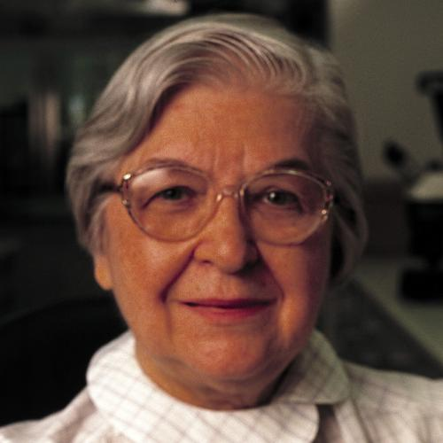

Biography
Early Life
Stephanie Kwolek was born by Polish immigrant parents, John and Nellie Kwolek in New Kensington, PA (a Pittsburgh suburb) on July 31, 1923. John was a naturalist by avocation and while Stephanie was young, he would often explore the natural world with her. In her early years, she would express her love for science and fashion to her parents as well. John ended up dying when Kwolek was just at the age of 10. After highschool in 1946, she went to Carnegie Mellon University and received a Bachelor of Science.
After College
Soon after receiving her Bachelor's degree, Hale Church offered Kwolek a position at the Dupont in Buffalo, New York. This was only an opportunity for her because of World War II, a time where a very large number of men were gone fighting for their country. Kwolek originally wanted to only work at DuPont temporarily, but left her dream of a medical career to work there permanently in the chemistry field. In 1950, she moved to Wilmington, DE to work for the DuPont there.
Greatest Accomplishment
Due to an anticipation of gasoline shortage in 1964, her group at DuPont started a search for a lightweight, yet strong, fiber that can be used in tires. Her first attempt was close to what she wanted, but was not it. The first material was weak and made from less stiff fibers. She explained that the solution was “unusually (low viscosity), turbid, stir-opalescent and buttermilk in appearance.” Then she went on to say that conventional polymer solutions should not appear like this and should be translucent. She later on found out that this solution was a liquid crystalline solution. The solution was usually thrown away, but one day Kwolek convinced Charles Smullen, the running of the spinneret and a technician, to test her solution. Upon testing it, it was discovered that this fiber would not break in the same conditions that Nylon typically would. It was also five times stronger than steel by weight. Her supervisor and laboratory director knew the significance of this discovery so they started a new field called polymer chemistry. By 1971, Kevlar was introduced and soon, Kwolek learned that the fibers could be made even stronger with heat